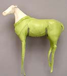
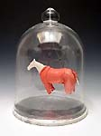
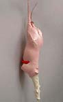
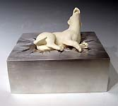
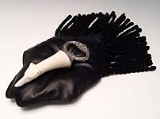
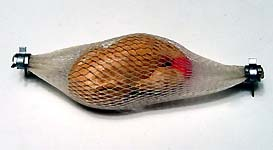
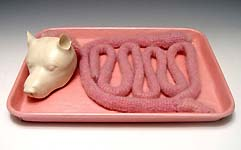

|
Adelaide Paul
American ceramist.
American ceramist Adelaide Paul received her BFA from the New York
State College of Ceramics at Alfred University in 1993 and an MFA
from Louisiana State University, Baton Rouge, in 1996. She received
Leeway Foundation grants in 2002 and 2004. Paul has taught at universities
in Texas and Montana and currently teaches at the Maryland Institute
College of Art in
Baltimore. Her finely modeled, semi-figurative sculptures are on
display at the Garth
Clark Gallery in New York until June 26, 2004.

Artist's Statement:
Since the 1940's, thousands of collies have been bred so that nine
transvestite "Lassies" could perpetuate a celluloid myth
about a boy and his dog. Collies, Chihuahuas, Dalmatians, Greyhounds
and other breeds have, for various market driven reasons, experienced
meteoric eruptions in popularity; invariably they have subsequently
suffered the consequences. In its extremes, American Culture posits
an alternately cloyingly sentimental and brutally callous relationship
between humans and both domesticated and wild animals. Animals are
anthropomorphized in film, fiction and popular culture. They (and
their requisite accessories) are hot commodities; like all commodities,
they are also inexorably disposable.

Recently I have been studying the anatomy of animals. One cannot
contemplate the intricacies of consumption without an acknowledgment
of the carnality of desire, be it a desire for material goods or
a wide range of sensual slakings. On a pragmatic level, rendering
an animal (of any species, including our own) accurately on the
outside is vastly facilitated by understanding the organization
of the parts on the inside. But the inside of the body is transgressive,
private, frightening, even revolting to most of us. Meat cuts are
trimmed and often dyed like an expensive haircut, hermetically sealed
and given names such as "bacon" and "London broil;"
the flesh becomes "beef" and "pork," because
"muscle of cow, "or "muscle of pig" would likely
be off-putting. The epiglottis of the horse seems more vaginal than
the vagina, (perhaps giving an unintended additional layer of meaning
implicit in the 1970s pornography flick "Deep Throat").
The muscles of a fresh (unembalmed) horse's leg are a surreal blue-purple;
glistening under an iridescent, translucent fascial sheet. It is
strangely beautiful.

Muscle
is meat and, on a great many levels, so are we. All organisms are
dependent upon other species in one way or another; consumption
in every sense of the word is integral to life in western (and,
increasingly, non- western) culture. I seek to pose questions to
the viewer regarding these consumer/consumed/consummated relationships
by juxtaposing found and fabricated objects evoking multiple possibilities
as to just whom is consumed?
Images and artist's statement courtesy Garth
Clark Gallery. ©
More Artists of the Week
More Articles
|
{kind=link}
{kind=link}
{kind=link}
{kind=link}
{kind=link}
{kind=link}
{kind=link}